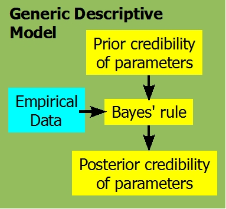
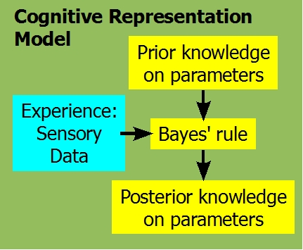

Figure 1. Why you should attend the tutorial. (Notice that the Bayesian analysis reveals many credible regression lines, for which the slopes and intercepts trade off, instead of just one "best" line.)
This tutorial introduces you to doing Bayesian data analysis, hands on. The intended audience is graduate students and other researchers who want a ground-floor introduction to Bayesian data analysis. No mathematical expertise is presumed.
Complete computer programs will be provided. The software is free; see installation instructions, below, before arriving at the
tutorial.
Agenda: The full-day tutorial progresses through the following topics.
9:00-10:30 Bayes' Rule, Grid Approximation, and R. We start with the basics of conditional probabilities, the meaning of Bayes' rule, and simple examples of Bayes' rule graphically illustrated with grid approximation in the programming language R.
10:30-11:00 Break
11:00-12:30 Markov Chain Monte Carlo (MCMC) and BUGS; Linear Regression. We explain the idea of approximating distributions by large representative samples, and MCMC methods for generating them. The BUGS language is introduced and used to do Bayesian linear regression.
12:30-1:30 Lunch (on your own)
1:30-3:00 Hierarchical Models and Model Comparison. Bayesian methods and the BUGS language make hierarchical modeling straight forward. Hierarchical models are tremendously useful for analyzing individual differences, repeated measures, and structural constraints across conditions. Model comparison is a case of hierarchical modeling.
3:00-3:30 Break
3:30-5:00 Bayesian ANOVA; Power Analysis. We use hierarchical analysis of variance with Bayesian parameter estimates, for rich and flexible inferences about differences between groups. We conclude with a brief look at power analysis from a Bayesian perspective.
Why go Bayesian?See Figure 1. But beyond that,
modern Bayesian methods are the best approach to empirical data analysis because Bayesian methods yield richer inferences than traditional methods and without use of ill-defined p values.
Sciences from astronomy to zoology are changing from 20th-century null-hypothesis significance testing to Bayesian data analysis.
Read more:
An open letter explaining why it's time to go
Bayesian.
An article* that explains a critical flaw
of p-values in null hypothesis significance testing, and two
different Bayesian approaches to assessing null values.
Kruschke, J. K. (2010). Bayesian data analysis. Wiley
Interdisciplinary Reviews: Cognitive Science, 1(5),
658-676. (doi:10.1002/wcs.72)
An article* that emphasizes advantages of
Bayesian data analysis and the fact that Bayesian data analysis is
appropriate regardless of the status of Bayesian models of cognition.
Kruschke, J. K. (2010). What to believe: Bayesian methods
for data analysis. Trends in Cognitive Sciences,
14(7), 293-300. (doi:10.1016/j.tics.2010.05.001)
*Your click on this link constitutes your request to
the author for a personal copy of the article exclusively for
individual research.


Figure 2. Concepts of Bayesian data analysis (left) transfer to Bayesian models of mind (right), but Bayesian data analysis with generic descriptive models will be useful even when specific Bayesian models of mind fail to fit real behavior.
Bayesian data analysis uses generic descriptive models such as
linear regression, without any assertions about the processes that
generated the data. Bayesian methods infer credible values of
parameters in the descriptive models, such as credible slopes and
intercepts in linear regression, as suggested in the left side of
Figure 2.
... but concepts and methods of Bayesian data analysis
transfer to Bayesian models of cognition.
Because the Bayesian approach to inference is the normative
approach, some cognitive scientists posit that cognitive processing
itself is based on Bayesian inference by the mind, as suggested in the
right side of Figure 2.
When you learn about concepts and methods of Bayesian data analysis, it is easier to understand Bayesian models of mind. But Bayesian data analysis will always be useful, even if particular Bayesian models of mind fail to accurately mimic cognition.
Who is the instructor?
John
Kruschke is five-time winner of Teaching Excellence Recognition Awards from Indiana University, where he is Professor of Psychological and Brain Sciences, and Adjunct
Professor of Statistics. He has written
an introductory textbook on Bayesian data analysis; see also the articles linked above. He has presented many well-received workshops on Bayesian data analysis.
His research interests include the science of morality,
applications of Bayesian methods to adaptive teaching and learning,
and models of attention in learning, which he has developed in both
connectionist and Bayesian formalisms. He received the Troland
Research Award from the National Academy of Sciences. He chaired the
Cognitive Science Conference in 1992.
Bringing a notebook computer?
You do not need to bring a notebook computer to the
tutorial. But you are invited to bring one, so that you can run the
programs and see how their output corresponds with the presentation
material. If you want to bring a notebook computer to the tutorial,
you must install the software listed below before arriving at the
tutorial, because there will not be time to do it during the
tutorial and there might not be internet access.
One of the packages we'll be using requires the Windows
operating system (OS). If your machine can operate with Windows,
the tutorial materials may operate best that way. If you are using
Macintosh OS or Linux without the option to boot with Windows, you
must install a Windows emulator such as the freeware
WINE (which stands for WINE Is Not an Emulator). WINE can be
downloaded from http://www.winehq.org/. For Mac users, WineBottler is reported to work for this
installation. See this blog entry for more details. From this
point on, these instructions assume you are running Windows or a
Windows (non-)emulator.
Install the free programming language R. Go to http://cran.r-project.org/. In the box labelled
"Download and Install R" click the "Windows" link. On the page
that appears, click the "base" link. The next page that appears
has the latest version of R as its top link. Get the 32-bit
version, not the 64-bit version. Click that link and follow the
installation instructions. (Even if you are using MacOS or Linux,
download the Windows executable and install R within WINE!)
Invoke R. (If you are using MacOS or Linux, invoke the Windows
version of R within WINE.) At the command line in the R console
window, type install.packages("BRugs") You must
include the quotes around "BRugs", and type "BR" in uppercase and
everything else in lowercase. You will be prompted to select an
internet repository; choose a site that is geographically near you.
Note: You must be using a recent version of R for the
install.packages("BRugs") command to work properly. Are you getting an
error message that the package is not available? If so, try this: In
the R console window, click menu items Packages > Select Repositories,
and, in the resulting pop-up window, make sure to select both CRAN and
CRAN(extras), then click okay. BRugs lives in CRAN(extras). Then try
install.packages("BRugs") again. Thanks to Uwe Ligges for these hints!
Copy the following data analysis program to your computer and
be sure that it runs. Right clickthis link and save the linked file on your
computer, using any file name with a ".R" extension. Then, invoke R,
and on the R console window click the menu items File >
Source R code... Browse to your saved file and
select it (and click Open or OK). The program should run in R and
produce a graph in a new window and some output text in the R console.
If the program does not run, please study all the previous steps
and be sure that each was successfully accomplished.
Programs for the tutorial are selected from programs for the
book, available here, and from more recent work, available here. (Updated July 4, 2011.)
This page URL:
http://www.indiana.edu/~jkkteach/CogSci2011Tutorial.html

 Who is the instructor?
Who is the instructor?